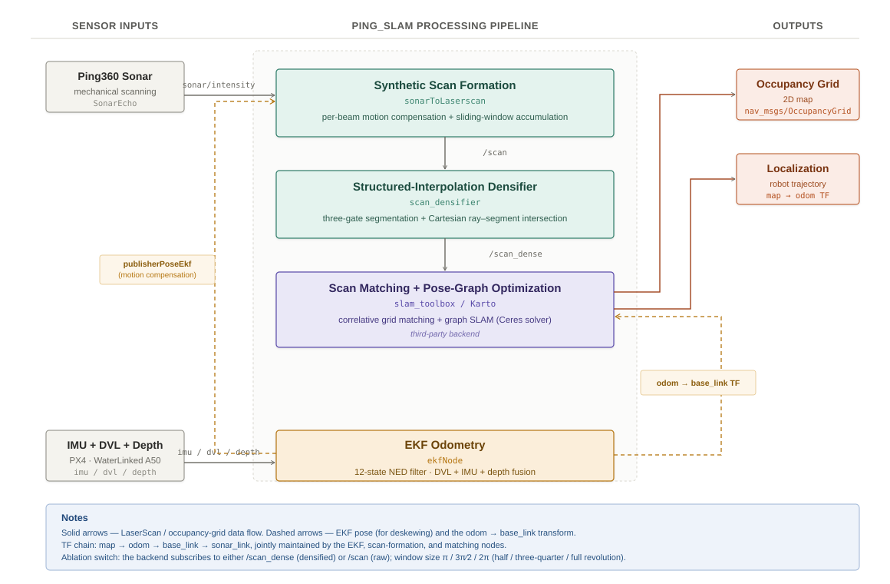
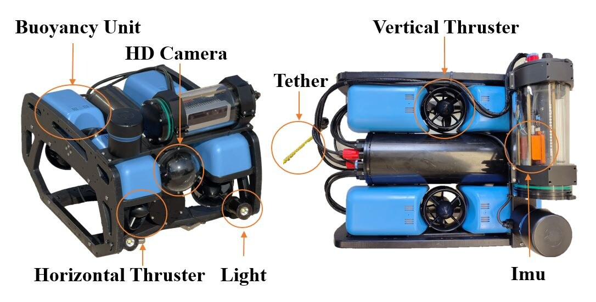
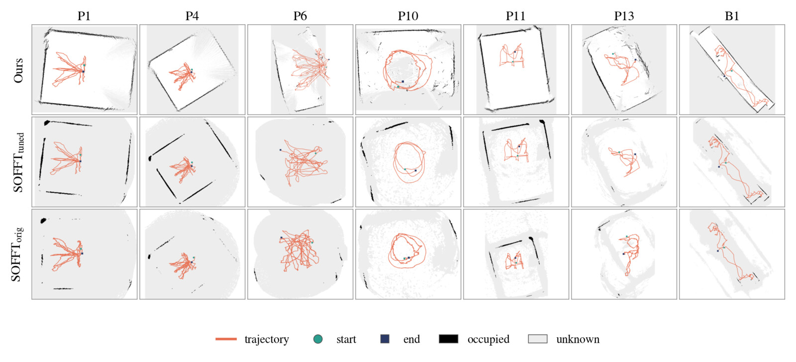
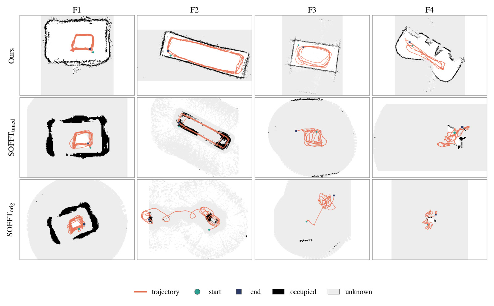
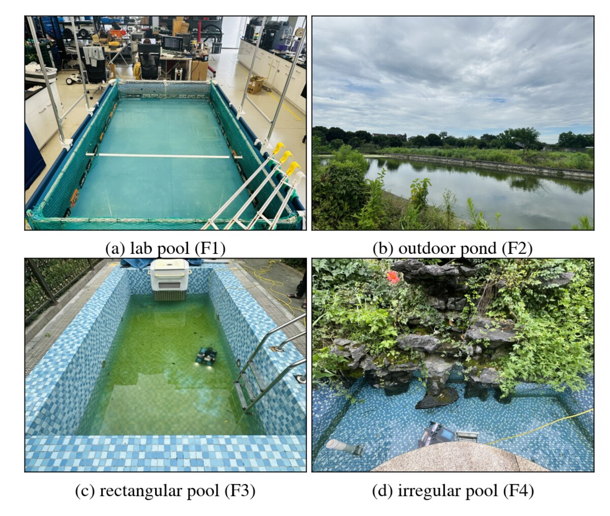

System



Affiliation: to be announced
Four sequences on one screen (P3 and B1 from the public Bremen benchmark, F1 and F4 from our field recordings), each processed online during a 1× real-time replay of the recorded data. The screen recordings are accelerated; every panel shows its own playback factor and elapsed real time. The grid is followed by the final maps of our system and of the released and re-tuned SOFFT-SLAM baseline for each sequence. Download MP4 (1080p, 1:28, no audio).
Mapping confined, turbid waters with small underwater robots is a prerequisite for infrastructure inspection, and a mechanical scanning imaging sonar (MSIS) is the perception sensor that fits such platforms: it sees through water that blinds cameras at a fraction of the cost, size, and power of a multibeam sonar. However, a single rotating beam needs tens of seconds per revolution and returns sparse, reverberation-corrupted ranges, which violates the dense, instantaneous-scan assumptions of the mature laser-based SLAM stack, while sonar-specific alternatives either give up real-time operation or add optical and inertial sensing that turbid water degrades.
This paper presents a real-time MSIS SLAM system that instead adapts the correlative scan-matching and pose-graph paradigm to acoustic data by repairing the three places where it breaks. First, a scene-adaptive echo extraction front end chooses its detection mode from two measurable properties of the scene, then purifies the resulting points by continuity and rejects frames that carry too little geometric evidence. Second, a motion-compensated synthesis stage assigns every beam its own interpolated odometry pose and aggregates a rotation-driven sliding window into overlapping pseudo laser scans, with optional chord densification of validated wall segments. Third, the pose-graph back end retunes its loop-closure decision layer to the low correlation responses that sparse acoustic scans produce, on top of a loosely coupled DVL/IMU filter.
Across eighteen datasets, fourteen of them with reference trajectories, spanning sonar ranges from 3 to 30 m and both public and field waters, the system is more accurate than the released baseline on all fourteen and than our own strongest re-tuned baseline on ten, reaching 0.063 m to 0.078 m absolute trajectory error on its best sequences. It sustains 1× online operation on every dataset with a fixed start-up overhead of about 80 s, and it maps walls to a median thickness of a single grid cell where the baseline's are 2 to 4× thicker or vanish below the occupancy threshold.


Absolute trajectory error: translational RMSE after SE(3) alignment against the reference trajectory
(evo_ape tum --align). SOFFTorig is the released open-source baseline with its released parameters;
SOFFTtuned is the same code after our own parameter search. Best per row in bold.
| Dataset | SOFFTorig [m] | SOFFTtuned [m] | Ours [m] |
|---|---|---|---|
| Public benchmark (Bremen MSS), motion-capture reference | |||
| P1 | 0.438 | 0.160 | 0.175 |
| P2 | 0.708 | 0.150 | 0.214 |
| P3 | 0.296 | 0.119 | 0.078 |
| P4 | 0.410 | 0.118 | 0.146 |
| P5 | 2.710 | 1.977 | 0.470 |
| P6 | 2.560 | 3.522 | 0.671 |
| P7 | 2.094 | 3.625 | 0.388 |
| P8 | 3.292 | 3.836 | 1.154 |
| P9 | 0.451 | 0.081 | 0.089 |
| P10 | 1.246 | 1.044 | 0.793 |
| P11 | 0.316 | 0.118 | 0.116 |
| P12 | 0.210 | 0.065 | 0.063 |
| P13 | 3.247 | 0.817 | 0.307 |
| Field water, TagSLAM reference | |||
| F1 | 0.125 | 0.079 | 0.072 |




Eighteen sequences in four classes. Pn is Dataset n of the Bremen MSS benchmark, so numbering matches the dataset paper.

The F1 to F4 rosbags (ROS 2, Ping360 + DVL + IMU, TagSLAM reference for F1) will be released with the paper. Link to follow here.
The source code will be released here upon publication. The full ROS 2 (Foxy) workspace is prepared and licensed for release: our front end, the pose-graph back end, per-dataset configurations, the evaluation and tuning harness, and the baseline used in the comparison. It is held back only until the manuscript is accepted.
cd ping_slam_ws
source /opt/ros/foxy/setup.bash
colcon build --symlink-install && source install/setup.bash
# pick a dataset: copy config/*_P3.yaml to the unsuffixed working copies, then
ros2 launch launch/full_slam_run.py # terminal 1: SLAM pipeline (+ RViz)
ros2 bag play data/P3_DataSet03 # terminal 2: 1x replayThe evaluation protocol (evo alignment, dataset table, per-dataset parameters) and the tuning harness used for the re-tuned baseline will be documented in the repository.
@article{sonarslam2026,
title = {Real-Time Pose-Graph {SLAM} with a Low-Cost Mechanical Scanning Sonar
in Shallow, Reverberant Waters},
author = {TODO},
journal = {under review},
year = {2026}
}The baseline is SOFFT-SLAM by Tim Hansen and Andreas Birk (ICRA 2024); the public sequences are from the Bremen MSS benchmark by Hansen, Belenis, Bande Firvida, Creutz and Birk (IEEE Access 2024). The back end builds on SLAM Toolbox by Steve Macenski and Ivona Jambrecic (JOSS 2021).